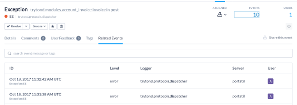

Sentry and Tryton Integration
Available on: http://pokoli.github.io/sentry-tryton/
Who am I?
Sergi Almacellas Abellana
- (Python ♥) Programmer
- Open source enthusiast
- Tryton commiter since Nov 2013
What's sentry?
- Error tracking system
- Open source
- Saas or On Premise
- Written in Python
Sentry features
- Group error events
- Give context to events
- Alerts
Sentry features
Group events
Sentry features
Give context to events
- Traceback
- Optional tags
- Breadcumbs
- User data (if any)
- Extra data
Sentry features
Notifications
- Alert rules
- Workflow
Available Methods
- Email (default)
- IRC/Slack/Hipchat
- Twilio (SMS)
- ...
- Add your plugin here
How does sentry work?
- Agent on server/client side
- Intercept error and send via API
- Show feedback to user
Tryton sentry
Before
Tryton sentry
After
Tryton sentry installation
pip install sentry_tryton
Tryton sentry configuration
Edit trytond-logconf.cfg
[handler_sentry]
level=ERROR
class=sentry_tryton.SentryTrytonHandler
args=('https://(key):(secret)@(sentry_server)/(project)', 'Error title', 'Use "{event_id}" to reference this error.',)
Available Data
Event info
Available Data
Traceback
Available Data
Raw Traceback
Available Data
Activated Modules
Available Data
Request Context
Available Data
User Details
Conclusions
- Better User Experience
- More debugging context
- Error traceability
Thank you!
The presentation code is avaiable on:
http://github.com/pokoli/sentry-tryton/